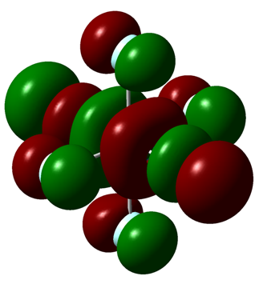
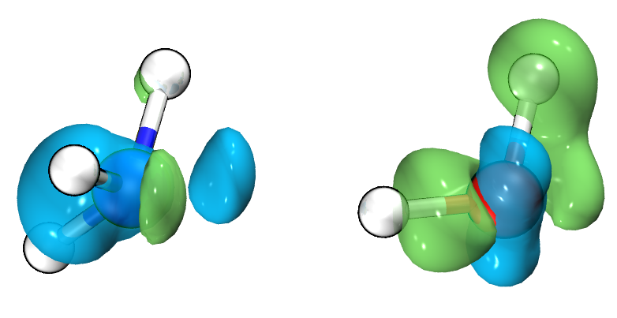

Projects

Molecular Orbital Visualizer
This is the first project I was assigned to
as a research assitant. The task at hand was to be able to create renderings
of molecular orbitals from calculations generated by the Chronus Quantum (CQ)
software package. CQ is a computational chemistry package capable of
creating simulations for quantum interactions, and an aspect of the package
that was missing was visualization for that data, especially visualization of
molecular orbitals, which is important and useful information for the chemistry
community. Thus, I created a method that extracted data from calculations, and
reformatted the data into files readable by many well-known scientific visualization packages.
With this method, I was able to generate molecular orbital graphs, (pictured to the left)
The source code is currently private, as it is being developed concurrently with CQ,
but please inquire if you are interested in learning more about the algorithms I applied
for an efficient data transfer.

Electron Density Movie Maker
This project was also done for CQ, and it has a similar
goal as the MO Visualizer, to create visualizations of quantum
interactions, but this time, it can generate videos that show
the electron density difference within a chemical system through time.
As this project requires different softwares to work harmonically,
I implemented user interface features to make the workflow process
more cohesive, and to make the process of creating movies much simpler. To the right,
is a frame from one of the videos generated by my project from a calculation in CQ.
Like my other project,
the source code is also still private, so please
inquire if any questions arise.